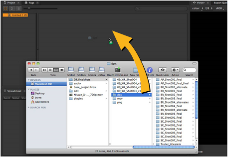

Locate your media in a file browser and drag the frame range, clip, folder, or folders into the Project tab.

Ingest behavior depends on the target:
• Dragging a folder into the Project tab automatically ingests all the contents of the folder, including other folders and their contents.
• Dragging a movie file, such as a .mov or .r3d, automatically ingests the entire clip.
• Dragging a single file or file range, that is part of an image sequence, is controlled by the Preferences > Behaviors > File Handling > Scan for file sequence range checkbox:
• Enabled - the default setting, dragging a single file or file range, that is part of an image sequence, creates a clip in the bin view containing all available frames.
For example, dragging frames 1-5 and 11-20 ingests the entire frame range.
• Disabled - only the dragged frame or range is imported into the bin.
For example, dragging frames 1-5 and 11-20 ingests two distinct clips, one containing 5 frames and one containing 10 frames.
|
|